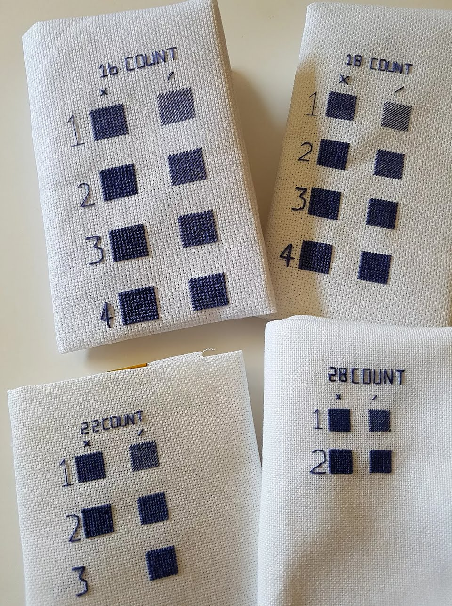
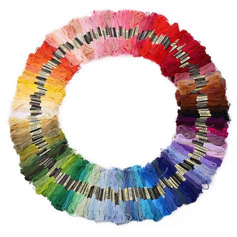
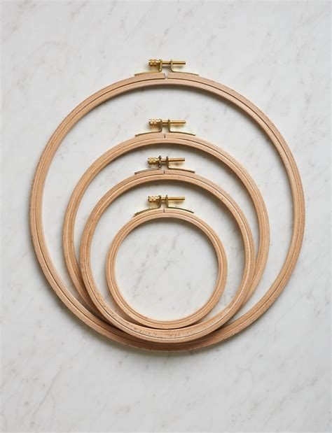
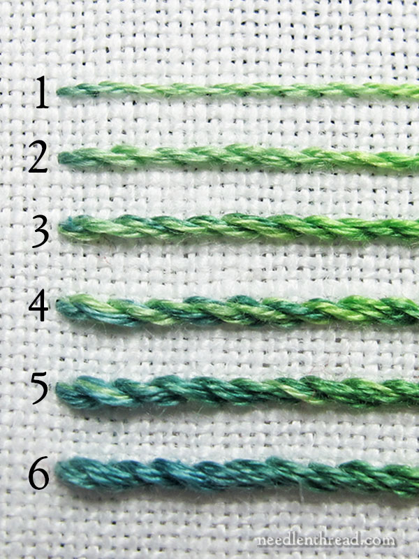
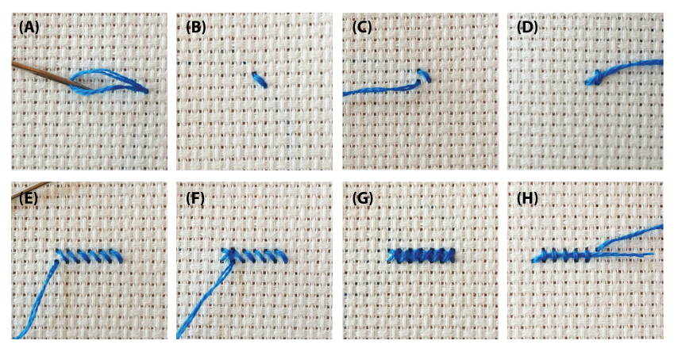

Here at Stitches of The Heart, we understand that everyone has different ways of learning. So, before we get into the demo and instructions and all that good stuff, we thought we'd include some youtube tutorial options, for those who prefer to learn with videos. Three of our favorites are included at the bottom of the page. Please enjoy! And now, onto the tutorial.

First thing first, you need to select your materials: Although cross stitch refers to the way in which you create a stitched pattern and not to a particular fabric, it is most often done on a type of material known as Aida cloth. This material is loosely woven in a grid pattern that makes lining up all your stitches easy. Aida fabric comes in different sizes which refer to the number of stitches that can be created in 1 square inch. The options are typically 11, 14, 18, and 28. As it is the easiest to start on an Aida cloth that uses an 11 or 14 stitch count, we recommend it for beginners, because this provides larger spaces for your cross stitch. The higher the number of stitches, the smaller your crosses will be.
Next, you have to select your thread. Cross stitch is great because it offers so much freedom on the part of the maker, particularly in the color options of the thread. Embroidery floss is typically used and can be found in hundreds of colors. Each skein of embroidery floss comes in six threads, but only 1-3 will be used for cross stitch at a time. Most patterns have a list of the colors needed, and how many skeins you'll need. Therefore, depending on the pattern you pick, your colors may vary.


Besides your needles, the last piece of equipment you need is an embroidery hoop. This is a double ring made of plastic, metal, or wood that secures your cross stitch as you work. Although you can create a cross stitch without one, embroidery hoops are incredibly helpful and relatively inexpensive. Small hoops are easier to hold but must be moved often, while large hoops require more of a grip but need to be moved around your needlepoint less.
Onto the Prep: Cut your fabric and floss. The size of your fabric will depend on the size of the pattern you are using. Each small square on the cross stitch fabric is representational of a single stitch (or ‘x’ shaped cross), and can be counted across to get your exact size. Your embroidery floss should be cut to a length of about 36” to begin. Embroidery floss comes in strands of six threads, but typically only one is necessary for cross stitching. Gently pull apart the threads and use a single thread for each section on your pattern. Some patterns may call for multiple threads to be used at once, so make sure to check yours before assuming the use of a single thread.


Finally, Take your single thread of embroidery floss and create a loop at the end. Wet the center of this loop (by licking it or using a drop of water) to make threading it easier. Then pull the loop through, leaving the two tail ends (one should be very short) to hang out the opposite side of the eye of the needle. Count on your pattern the number of grid spaces to the first stitch (typically the centermost stitch), and insert your needle from the bottom. Pull the thread all the way through, leaving a bit of the loop at the bottom. Then, cross the thread down or up diagonally and pull the needle through the loop underneath.
As mentioned above, here are our 3 favorite youtube tutorials to get started on cross stitching. We hope you enjoyed.